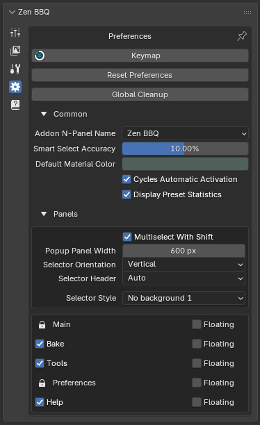
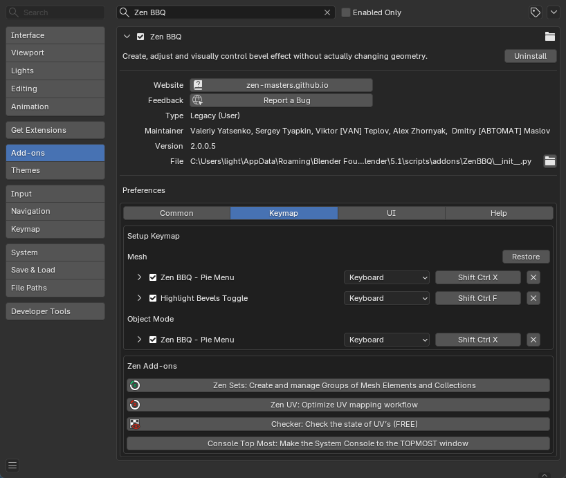
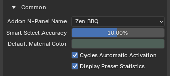
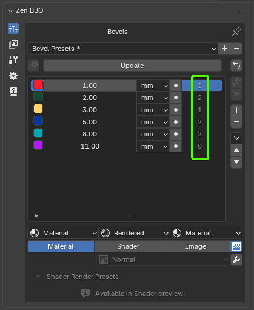
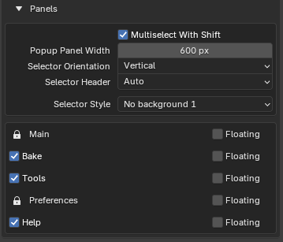
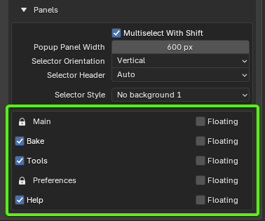

Preferences
The Preferences panel allows you to customize hotkeys, UI styling, default values, and general behaviors to integrate Zen BBQ seamlessly into your custom modeling pipeline.
System Actions
 |
|---|
| Fig. 1. Top-level configuration utilities in the Preferences tab. |
- Keymap: Instantly opens Blender’s Preferences window directly focused on the dedicated Zen BBQ Keymap configuration sub-tab. Here, you can easily customize, bind, or restore hotkeys for the Zen BBQ Pie Menu and Highlight Bevels Toggle across Edit Mesh and Object modes.
 |
|---|
| Fig. 2. Dedicated Zen BBQ Keymap customization panel in Blender Preferences. |
- Reset Preferences: Reverts all Zen BBQ settings (including custom bevel width presets) back to their default “out-of-the-box” factory state.
- Global Cleanup: Executes a deep scene-wide purge of all Zen BBQ-related data. This completely removes dynamic materials, shader graphs, and custom edge/vertex attributes from every mesh in your active blend file.
Common Settings
 |
|---|
| Fig. 3. Common global configuration options in Zen BBQ. |
- Addon N-Panel Name: Allows you to customize the title of the Zen BBQ tab in Blender’s Sidebar (N-Panel). This is extremely useful for decluttering your workspace or grouping custom addon tabs together.
- Smart Select Accuracy: Sets the default tolerance threshold (in percent) for the Smart Select operator (located in the main Bevels tab). When active, the operator selects all geometry sharing the same bevel value within this specific accuracy range.
- Default Material Color: Defines the base viewport display color used when Zen BBQ automatically generates a default material for an object (if no material was assigned manually). For a deeper look into how this color interacts with shading, check out the Material, Shader, and Image Preview Modes documentation.
- Cycles Automatic Activation: When enabled, Zen BBQ automatically switches Blender’s active render engine to Cycles the moment you toggle the Shader preview mode or initiate a bake. This ensures a seamless, out-of-the-box workflow since procedural bevel shading and baking are strictly Cycles-dependent.
- Display Preset Statistics: Toggles the visibility of selection statistics directly within your Bevel Presets list.
 |
|---|
| Fig. 4. Active preset statistics showing the count of assigned objects per preset. |
💡 Performance Note: To prevent background lag and keep Blender’s UI highly responsive, Zen BBQ does not track mesh changes in real-time. To update the numbers in the statistics column, simply click the Update button at the top of the Bevels list.
Panels Settings
This section controls how Zen BBQ’s interface displays and behaves. You can customize the look of various UI selectors and decide how individual panels are integrated into Blender’s N-Panel.
 |
|---|
| Fig. 5. Customizing Selector Style to fit different Blender UI themes. |
Selector Customization
- Multiselect With Shift: (Detailed in the Main Panel Features guide) Allows holding
Shiftto keep multiple sub-menus open simultaneously inside Zen BBQ’s Multi-Panel structure. - Popup Panel Width: Configures the default width (in pixels) of Zen BBQ panels when opened as independent popups.
- Selector Orientation: Determines whether selector elements (such as mode tabs) are laid out Horizontally (as icons across the top) or Vertically (stacked as a list).
- Selector Header: Adjusts the alignment of the panel selectors—either stretching them to fill the full width of the panel or aligning them neatly to the left.
- Selector Style: Offers multiple visual themes (
No background,Blender Style,Blender Invert Style, etc.) to style selector buttons. This is extremely helpful for visual consistency when working with custom Blender UI themes.
Panel Display & Layout Manager
At the bottom of the Preferences panel, you can manage the visibility and layout behavior of each individual Zen BBQ component: Main, Bake, Tools, Preferences, and Help.
 |
|---|
| Fig. 6. Zen BBQ’s Multi-Panel header (highlighted in green) managing active panels. |
- Active Checkboxes (Visibility): Unchecking a panel (such as Bake, Tools, or Help) completely hides it from the UI, allowing you to hide features you don’t currently use.
- 🔒 Locked Panels: The Main and Preferences panels are permanently locked. This is a safety feature to ensure vital bevel operators and the configuration panel itself remain accessible.
- Floating Toggles:
- When unchecked (Default), the corresponding panel is docked directly inside Zen BBQ’s custom Multi-Panel system, selectable via the top tab icons (Fig. 6).
- When checked, that specific subpanel is extracted from the tabbed interface and behaves like a standard Blender subpanel. It will sit independently in the N-panel, allowing you to collapse, expand, or reposition it like a native Blender menu.